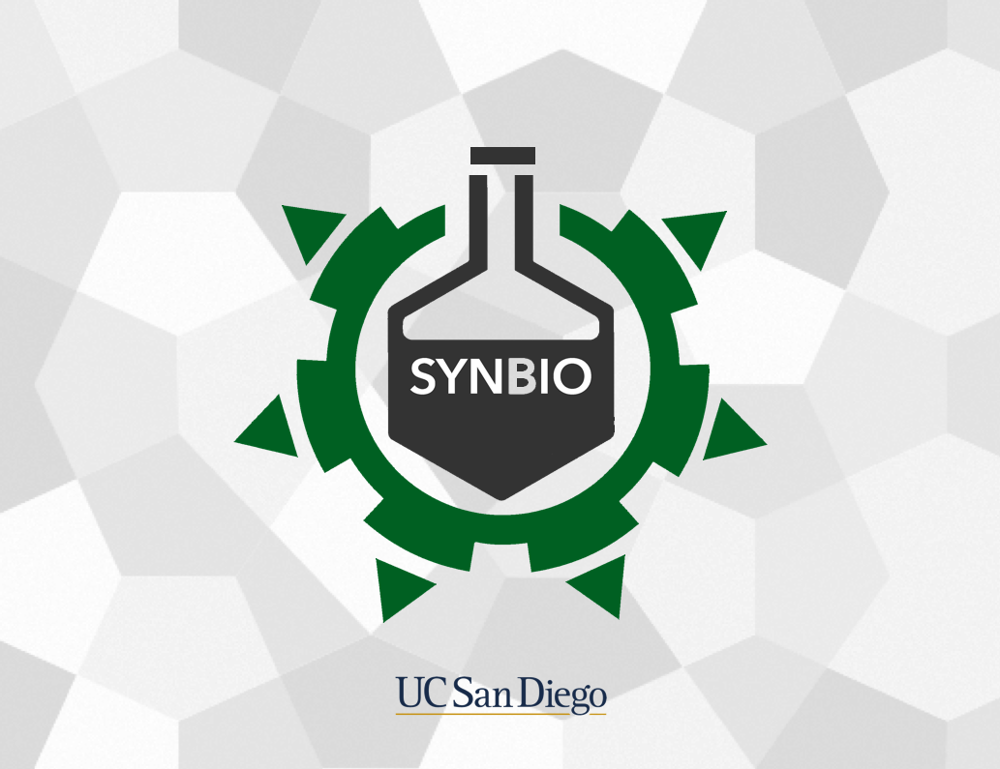

Synbio
Role: Webmaster + Book Designer
Tools: Sketch, HTML/CSS, and Google Docs
Synbio is an undergraduate project-based Bioengineering organization at UC San Diego dedicated to bringing awareness to and exploring ideas in synthetic biology. As an offical board member of Synbio, I partcipated as a webmaster and created and maintained the Synbio website.
To enhance the recognition and understanding of synthetic biology, members from Synbio contributed to write diverse fields of synthetic biology. I assembled the articles and designed the cover page.